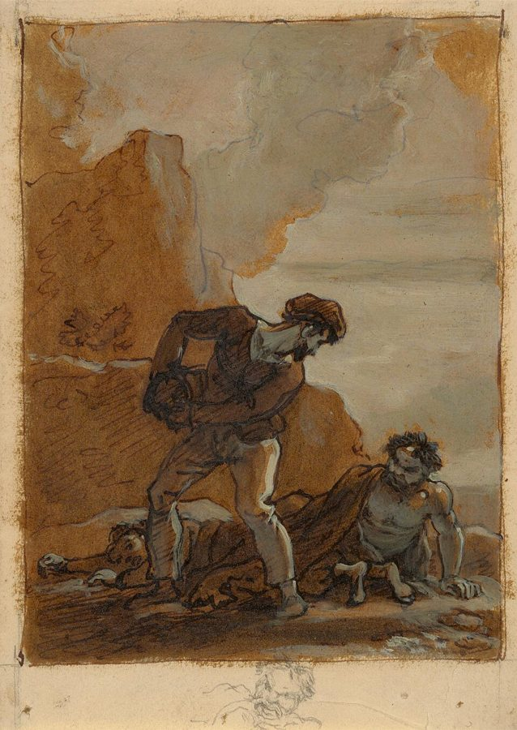

Ladies!
… he says, collapsing with laughter …
译本：「女士们！」
女厕所（门上的牌子）
在英国，Ladies 是女厕所门上的字。前一句他刚说盒子里有个马桶，所以全班大笑：他把自己关进了女厕所。作者猜大家笑是因为这暗示了同性恋（I suppose）。「女士们」读不出厕所。
这是「叙事技巧」一篇的后半，也是最热闹的一段。先是两个连着玩的游戏：一个人飞快地提问，专挑对方料不到的方向；一群人每人只说一个词，合起来讲故事、写信。接着作者把整篇收成三条编故事的规则，最后用四段话把开篇那句「别管内容」收回一半。读的时候抓两条线：为什么想控制故事的人反而毁了它，以及三条规则各自防的是哪一种卡壳。

上一页是一串让人不必为想象负责的游戏，停在「专家」。这一页先接一个给「专家」热身的提问游戏，再到一人一字：那串游戏到这里最极端，谁都控制不了故事。§4 换了方向，不再讲怎么放开，而讲怎么把一个故事撑住。§5 回到这一篇的第一句话。这是第 04 篇的最后一页。
作者几次把学生的停顿和笑读成「怕暴露自己」「碰到了性的内容」；他说一人一词合写的信通常会走过四个阶段，这也只出自他的课堂观察。这些当成他的经验读，不当规律。书里那十四封信有粗话和性内容。
想编出一个故事，为什么先得放下对它的控制？放下以后，又靠什么让它不散？
读的时候带着这几个问题。不用先找答案，读完回来对照「检查一下理解」。
三节，一节比一节紧。§3b 是两个游戏的课堂实录：「快问快答」是三段问答记录，再加一段提问者替对方把事做完的反例；「一人一字」从「让人编第一句，他就僵住」讲起，然后是围圈、写信、深夜的十四封信、和孩子玩、边讲边演、全组齐声，一个变体接一个，长而散。§4 突然收紧：第一段就提出主张，然后是一串例子（电影、登山、《暴风雨》、青蛙公主），再讲两种毁掉故事的方式，用「剧本写作」游戏的课堂片段演示，最后列出三条规则。§5 只有四段：两场演出的回忆，一段收尾，回到这一篇的开头。
作者落在哪：故事不是「想」出来的：放下对后面的控制，打断一件例行的事，戏留在台上，别把刚提出的又抵消掉，故事就有了；「别管内容」是骗学生上路的把戏，最好的即兴演员在某个层面上知道自己在演什么。
这一页是原书和译本「叙事技巧」一篇的最后三节（译本的第 3 节在这里只取后半，从「快问快答」开始）。粗体是本站给的节名，下面是译本的节号和小标题、这一节在译本电子书中开头的几个字（搜它就能跳过去），再下面是英文原文的开头。每节标了档：「先读」是这本书最精彩、不读就错过的，「有空」好看但跳过不丢线。读完打个勾。
先把这一页用到、作者默认你懂的几个概念讲一遍。讲的是概念本身，作者拿它推出什么，读原书时自己看。
心理学里有个老词叫「定势」（set）：人会按刚才的经验，预先备好接下来怎么应对。经典的演示是 Luchins 的量水题：连做几道要绕好几步的题以后，很多人碰到一步就能解的题，还是照老办法绕远路。
作者说的 set 和它很接近，只是用在一问一答里：你问了「盒子里有什么」，对方已经在等「有多大」「谁放的」这一类问题。下一问要是还在这一类里，对方早有准备；换到完全不同的一类，他来不及挑拣，只能直接答。日常的例子：面试官连问三道技术题，忽然问「你小时候最怕什么」，那一刻的回答最不像背好的。
在这一页：§3b「快问快答」里作者说回答容易、提问难，难就难在每一问都得换掉这个「设定」。
routine 在这里是「照例会这样做完的一套事」：挤地铁上班、洗碗、登山先上后下、给奶奶送一篮吃的。一件事开了头，谁都猜得到它怎么收尾。中文「常规」容易读成规矩、惯例，作者说的要具体得多，就是眼前正在进行的那件事。故事从它被打断的那一刻开始；打断以后的新局面，往往又成了一套新的例行，还得再打断。编剧课上常说的「激励事件」（inciting incident），指打乱主角平常生活的那件事，和这里很近。
在这一页：§4 开头作者用它替换「编个故事」这个让人僵住的要求，后面电影、登山、《暴风雨》、青蛙公主的例子都在说它。
刚提出一件事，又自己把它取消：「我头疼。」「吃片药吧。」「好了。」三句话过去，场上什么都没发生，看的人会觉得白看了。这是作者的即兴行话。它和拒绝（block）不一样：拒绝是挡住别人的提议，抵消多半是自己收回自己刚开的头，常常出于好心或怕麻烦。日常的例子：开会时有人提出一个风险，马上补一句「不过应该没事」，讨论就到此为止。
在这一页：§4 学生写的吵架戏和「丹尼斯喝水」那段都栽在这里；作者的改法是让刚提出的事留下来，而且变得更麻烦。
台上两个人开始聊别处、别的时候发生的事：「其他人怎么还没来」「上次他……」。观众只能听，没东西可看。小说可以回忆和转述，舞台上的戏却要发生在此时此地、台上这几个人之间。古希腊悲剧的惯例是把凶杀放在台下，由报信人上台讲述，这是一种有意的安排，不是跑偏。日常的例子：两个老朋友见面，一整晚都在讲不在场的同事，散了以后，你记不起两人之间发生过什么。作者先后用了 deflected 和 diverted 两个词，说的是同一件事。
在这一页：§4「四点钟」那场和洗碗戏都跑偏过；作者的办法是把行动拉回台上（去拿个水桶，掀开地板）。
作者在课上用过、照着就能玩的；个别几张是本站照书里的段落改的，卡里写明了来历。几个人、怎么玩、看什么写在卡片上；「先猜」那一栏是书里的课堂上发生了什么，先自己猜，或者先玩一次，再点开。全书的游戏卡汇总在游戏汇总。
译本：「快问快答」
作者说回答很容易，提问很难。书里一个女生从「在一个盒子里」一路答到「爸爸抓着大象的尾巴」，大家笑倒，好像刚讲完一串笑话，都觉得一段东西到头了。有一问让她明显慌了，作者认为是那一问太有性意味。答案里冒出这类内容，他的办法是不点破，只管尽快把下一个答案问出来。
答案里可能冒出暴力和性的内容。作者的做法是不评论、不追问「你为什么这么答」；和朋友玩也照这样，别拿对方的答案开玩笑。
译本：「一人一字」
作者说，谁想控制故事的走向，谁就毁了它。书里每个人说出一个词时，心里都盘算着另一个下文，最后冒出来的是「巨人！」。他说一旦想到什么就说什么，故事就像是外力在讲。写信那一版里，一位说自己学不会的英文系毕业生起初很僵，后来迷上了这个游戏，玩了很多次。
作者说这样写的信常会走到下流、疯癫的阶段，书里那组深夜写的信就有粗话和性内容。只在熟人之间玩，事先说好：写出什么都不算数，谁不想玩随时停。
他说演员碰到不愉快的事，常用一串形容词把它往后推，再来一句「但是我们逃掉了」。不许逃，故事反而往下走了：可以在怪物的肠子里划船，到了天堂发现上帝不在，就接管天堂，或者和上帝掰手腕。观众几乎不信这能即兴，很爱看两个演员这么默契。
作者还写了更强的版本：一人或两人闭眼，全组围着保护他们、配风声鸟叫、动手「加戏」，他自己说会有一股近乎邪恶的兴奋。闭眼加多人碰触身体，只在彼此信任的人之间玩，有人不舒服就停。
译本：「剧本写作」
作者叫他打断例行。他让一个人故意摔了盘子，两人吵了一阵，可吵架也是一套例行；他们拼盘子发现少一块，找到地板上一个洞，开始议论洞下面有什么，再次卡住，因为戏跑到了台下。作者让他把戏拉回台上，编剧就让两人掀开地板，卡壳一下解了。
按在书里出现的顺序排，标题前是节号。只讲到读懂这一页需要的程度。
英国的地址常写「门牌号＋房子或楼的名字」，房子可以叫 The Elms（榆树）之类，一栋公寓楼又常叫某某 Block。所以作者写下 89、学生说出 The、作者接上 Elms 时，学生说这不像地址；等她说「我卡住了」（I’ve got a block），作者顺手把 block 写进去，凑成一个像模像样的「榆树楼 89 号」。这是这一段的笑点，中文很难传过来，读译本时知道有这层就行。
作者说一人一词合写的信通常要走过四个阶段，然后附上三个学戏剧的学生一个深夜写的十四封信作例子：前几封满是粗话和性，中间是上帝、死亡和雪，最后几封是孤独和求救。其中第 7 封里有一句把犹太人写成在泥里扒钱的老套形象，原书照录，没有评论。书里还说这些信会有「精神错乱」的阶段，说那个一起讲故事的九岁男孩「心理失常」（原文加了引号），这是 1970 年代的说法，今天会说「有情绪或行为问题的孩子」。
RADA 是英国皇家戏剧艺术学院（Royal Academy of Dramatic Art），1904 年由演员兼剧院经理 Herbert Beerbohm Tree 在伦敦创办，是英国最老牌的戏剧学校之一。作者说他在那里也带学生玩过一人一字：大家拉过帘子盖在身上，躺成一大块布丁。
sensitivity training（感受性训练）起于 1940 年代后期美国的「T 小组」，一群人坐在一起，练习觉察自己和别人的感受；到 1960 年代，它和人本心理学、加州伊莎兰（Esalen）一类机构的「会心团体」一起流行开来，有许多蒙眼、触碰、托举、信任的身体练习。作者说全组闭着眼玩边讲边演时，自然就「发现」了各种这类练习。今天团建和戏剧工作坊里常见的一些信任练习，样子和它们很像。
《最后的细节》（The Last Detail，1973）是 Hal Ashby 导演、Jack Nicholson 主演的电影：两个海军老兵押送一个犯了小偷小摸的年轻水兵去军中监狱，路上决定让他痛快一回。《暴风雨》第二幕第二场，Caliban 听见有人来，以为是来折磨他的精灵，趴在地上用斗篷盖住自己；小丑 Trinculo 为了躲雨，偏偏钻进同一件斗篷，跟怪物躲在一起（见页首的图）。莫泊桑那篇作者没说篇名，多半是短篇《港口》（Le Port，1889）：一个远航回来的水手在马赛的妓院里，发现陪他的姑娘是自己的妹妹。
作者在 §4 括号里一句话说，有个部落国王的妻子被强行喂胖，像大海豹一样摊着。这件事出自斯皮克 1863 年出版的《尼罗河源头发现记》，写的是维多利亚湖西边的卡拉圭王国（在今坦桑尼亚西北）。那个部落在东非，不在印度。
他 1890 年的短篇《枭河桥记事》（An Occurrence at Owl Creek Bridge）写一个南方种植园主在桥上被绞死：读者跟着他挣断绳子、一路逃回家、扑向妻子，最后一句才知道那只是绳子勒紧前一瞬的幻觉。原书把篇名写成 Incident at Owl Creek Bridge。§5 两场戏里的 Anthony Trent、Ben Benison 和 Morgan，都是作者 1967 年组的即兴剧团 Theatre Machine 的创团演员，这个剧团 1968 到 1971 年在欧洲各地巡演。原书写的 Richardson Morgan，多处资料作 Richard Morgan。
读译本时值得翻一下原文的地方：双关、行话、口语，和译本传不出的语气。灰色斜体是原文里的一小段，在英文电子书里搜它就能找到；方框里是译本这一句的译法。译错的放在下一节「译本勘误」。
对着译本读这三节时，下面这些地方会把人读歪。方框里是译本的原句，在译本电子书里搜它就能找到；灰色斜体是英文原文那一处。只收意思错了、反了、漏了的，措辞上的出入不收。全书的勘误汇总在译本勘误。
… This question freaks her, because …
译本：「这个问题让她觉得有点怪异」
freak 在这里是「吓到、让人慌了」：下一句她结结巴巴才答出来。「有点怪异」像她只是觉得问题奇怪。「因为太有性意味」是作者对她为什么慌的解读。
… answers are a little too fast …
译本：「远远快过“正常”思维」
原文是让问和答比正常的思考稍微快一点。作者要的是来不及挑拣，不是快到极限；「远远快过」把程度说大了，照着玩容易问得太急。
… Sometimes we did it to a beat …
译本：「有时我们做得很好」
to a beat 是「跟着节拍」：大家按拍子一人一词地往下接，接不上的就出局。译本成了一句评价，看不出这是一个玩法。
… I wouldn’t be surprised to find …
译本：「我毫不惊讶有些文化将其作为一种占卜形式」
原文是「要是发现有些文化拿它来占卜，我不会意外」，作者是在猜，没说见过。译本读来像在陈述一件已知的事。
… terrified she’d give something away …
译本：「很害怕会把这东西寄出去」
give something away 是「露了底、泄露了什么」。作者的意思是她不是没创意，而是怕这个游戏让自己露出心里的东西，下文也明说她怕暴露自己的秘密。「寄出去」把字面的「送出去」当成了寄信。
… stories out as they told them …
译本：「按照他们讲故事的方式来表演」
原文是让学生一边讲故事、一边把它演出来，下一段搂着肩讲「我们」故事就是这个玩法。译本意思含糊，读来像是换一种表演风格。
… all sorts of sensitivity exercises are discovered …
译本：「他们探索了各种各样的微妙活动」
sensitivity exercises 是 1960–70 年代会心团体和感受性训练里那类身体练习（蒙眼、触碰、信任）。作者是说全组自己「发明」出了这类练习。「微妙活动」看不出指什么，见「书里的人和背景」。
… even very approximate effects …
译本：「人们开始提供非常近似的效果」
approximate 在这里是「粗略、大概」：旁人只给一点很粗糙的效果，比如拿湿树叶碰一下脸，闭着眼的人脑子就会补全成一整片森林。「非常近似」读成了「几乎一模一样」，正好反了。
… but of interrupting routines …
译本：「而是“打破常规”」
routine 是「照例会这样做完的一套事」（洗碗、登山、给奶奶送吃的），不是惯例、成规。作者要打断的是眼前正在进行的那件事，不是要人标新立异。§4 后面这个词还换过一种译法，说的是同一样东西；本站叫「打断例行」。
… He crawls under a sheet …
译本：「他选择爬到床底下」
原文是钻到一块布底下，剧本里是 Caliban 的斗篷。小丑后来钻进去和怪物躲在一起，两人挤在同一块布下，才荒唐好笑。这一段后面的「床底下」都该读成「布底下」。
… wreck their talent is by cancelling …
译本：「即兴术语，意指情节告一段落」
这是译注的解释。cancelling 指刚提出一件事，又自己把它取消，等于什么都没发生，比如后面丹尼斯喝了水就好了。译注的说法和作者举的例子对不上；正文里的「终止」，也照「抵消」来读。
… gets his two students to wash up …
译本：「一位编剧让另外两个人洗完澡后」
英式英语 wash up 是「洗碗」，所以下一步才会摔盘子、拼盘子。译成「洗完澡」，后面的盘子就没了来由。
… it stops being theatre, and becomes …
译本：「否则，它就不再是戏剧，而成了“文献”」
literature 在这里是「文学」：只能讲述、没法在台上演出来的东西。作者是说报信人讲完台下的惨事，要紧的是台上听的人受到的冲击，否则这场戏就成了念一段小说。「文献」是资料、档案，意思不对。
… at the same time they exercise control …
译本：「他们也在练习控制」
exercise control 是「行使控制、在掌控着」。作者说的是一个悖论：学到最后，人放开控制的同一刻，自己就在掌控。「练习控制」读来像是另外在练一门控制的功夫，悖论没了。
Anyone who tries to control the future of the story can only succeed in ruining it.— §3b。本站译：谁想控制故事往后怎么走，唯一能做成的事就是把它毁掉。
口气很满，带着作者惯有的那种挖苦：can only succeed in ruining，「唯一的成功是搞砸」。关键词是 future：他不反对你接住前面的东西（那是重新纳入），他反对的是替后面做打算。别把它读成「讲故事不要动脑子」，下一节的三条规则就是要动脑子的地方。
In the end they learn how to abandon control while at the same time they exercise control.— §5。本站译：到最后，他们学会了一边放弃控制，一边又同时在控制。
全篇收尾的悖论，口气平静，像在说一件做久了才懂的事。exercise 是「行使」，不是「练习」译本：「他们也在练习控制」，「练习」会让人以为是一边放开、一边另外练控制的功夫；作者的意思是放开和掌控在同一刻发生。
读完这一页的三节再看。下面是作者在这三节里的主张，由本站按主张重新组织，不按原书的顺序；每条后面是节号，拿不准就回书里那一节再读一遍。
一人一字时，每个人都替下一个词做了打算，只有不断抹掉自己的打算、接住别人刚说的，故事才走得下去；他说放开以后，像有外力在讲。快问快答也是这样，问得比正常思考稍快一点，答案就来不及被挑拣。那位自称没创意的学生，他说其实是怕暴露自己。
§3b说「编个故事」，多数人僵住；说「描述一件例行的事，再打断它」，人们就不觉得难了。找更有趣的例行没用，要的是打断；打断得多蠢都行，都会有人听。打断后的局面又会成为新的例行，故事本身老套了也算例行，都得再打断。
§4戏转去谈别处、别时的事，观众就没东西可看；刚提出的事又被取消，等于什么都没发生。他用「剧本写作」游戏诊断学生卡在哪一步，列出三条规则，并老实说这样编出来的故事不深刻、也不需要多少想象力，只是人们爱看。
§4最好的即兴演员在某个层面上知道自己在演什么，观众也知道；他举了两场他们做过的即兴为证。可是不先骗学生相信内容不重要、想象不归他们负责，他们就走不远；到最后，人学会一边放开、一边掌控，很久以后再把责任拿回来。
§5合起来：这一页把「放开」和「撑住」接在一起：先用游戏让人放下控制，再用三条朴素的规则让故事不散；最后作者坦白，「别管内容」本身就是一个带学生上路的把戏。
这一篇合起来：作者从自己的失败讲起：分析作品的含义让学生更拘谨，于是他决定不管内容、只看结构。看结构，故事就分成两半：自由联想不断冒出新东西，重新纳入把前面搁下的东西接回来，即兴演员像倒着走的人，看着走过的路。中间一长串游戏，从列清单、自动写作、「梦」、「专家」到一人一字，都在做同一件事：要么让冒出来的东西看上去不归他负责，要么快得来不及审，好绕开心里的审查。§4 把编故事收成三条规则：打断例行，戏留在台上，别抵消。§5 再把开头收回一半：最好的演员其实知道自己在演什么，「别管内容」是教初学者的办法。
这本书 1979 年出版。下面挑出这一页里能被后来的研究检验的说法，分「书里 / 当时 / 今天」三栏，并给一个结论。结论判的是标题里「书里的说法：」后面那一句。全书的这一节汇总在今天怎么看。
读完作者的主张，再看它站不站得住。每一块摆出三样：主流怎么看，作者怎么看，本站的评论。最后一句是本站对这一页的总体判断。
主流看法：创造力研究支持一半。Amabile 1979 年的实验里，事先被告知作品会被评判的人，作品被评为创造性更低；她后来的一系列研究都指向「外在的评价压力伤害创造性」。但「怕被评价」不等于「怕露出心底的秘密」，后者是精神分析的说法，没有直接证据。
作者的看法：那位自称没创意、说「我卡住了」的学生，其实是怕游戏让自己暴露秘密；学生的笑和慌，他也几次往性的方向解读（盒子外的字、刀插在哪）。§3b
本站的评论：前一半很有洞察，而且比实验早：把评价拿走、把「说一句好的」换回「随便说一句」，人确实就说得出来，一人一字和快问快答都是照这个设计的。后一半要打折扣：那位英文系毕业生的僵硬，也可能只是不好意思、觉得游戏傻，或者不想在陌生人面前出丑；把学生的慌和笑往压住的性上读，是 1970 年代流行的精神分析口气。作者的做法倒很稳妥：不点破，不解释，只管往下问。
主流看法：心理学有个老问题叫「需求特征」：Orne 1962 年指出，参与者会从情境里揣摩主持的人想看到什么，再不自觉地往那边靠。要说一种练习「通常」走过固定的阶段，至少得有很多组事先不知情的人和定好的判断标准。
作者的看法：一人一词合写的信通常先是谨慎或胡闹、藏着性暗示，再变得下流疯癫，再充满宗教感，最后流露脆弱和孤独；三个学生深夜写的十四封信是他的例子。§3b
本站的评论：那十四封信读来确实像一层层剥开，是全书最怪也最动人的段落之一。但作者事先告诉过那三个学生「坚持写下去，故事会变」（他说没告诉他们会变成什么样）；他们写了两个钟头、开了好几瓶啤酒、写到害怕才停。疲倦、酒、夜深和那句提示，都可能推着信往这个方向走。当它是一个动人的课堂故事，不当规律；自己试的时候，也别预设会走到哪一步。
主流看法：有研究看到即兴时脑子里确实有一部分在「放开」：Limb 和 Braun 2008 年让六位爵士钢琴手在磁共振仪里即兴，发现前额叶外侧（和自我监控有关）的活动下降，内侧（和自我表达有关）的上升。样本很小，只算一个线索；它显示的是监控放松了，作者说的「同时在掌控」，这个实验测不出来。
作者的看法：内容会自己出来，这话对也不对；最好的即兴演员在某个层面上知道自己在演什么。骗学生相信内容不重要、想象不归他们负责，是必要的把戏，很久以后他们才把责任拿回来。§5
本站的评论：作者难得把自己的教法说穿，这很诚实，也解开了这一篇开头那句话的悬念：「别管内容」是给初学者的一副拐杖，不是一套文艺理论。他没说清的是拐杖什么时候扔、谁来判断学生够强了；§5 的证据也只有两场他们自己做过的即兴。读者可以把「别管内容」读成「先别管」。
本站的总体看法：这一页最值得带走的是 §4 的三条规则：朴素，能当场检验，写东西、讲故事、做汇报都用得上。一人一字和快问快答好玩又安全，值得找朋友试一次。作者对学生为什么卡住的解读和信的「四个阶段」，当成他的课堂经验读，打个折扣。
先在心里答，再点开。答错的那题，回书里把对应那一节再读一遍。
回答只要脱口而出；提问的人每一问都得换掉对方正在等的那一类问题（作者叫它「设定」），还得只起头、不替对方把事说完。作者说，善于换「设定」的学生会成为更好的即兴演员。
提问的人把事都做完了，回答的人没东西可加，很快就卡住。改成起个头、留个空：「巨人对你做了什么？」「鳄鱼咬的是什么？」
每个人说完一个词，心里都想好了下文，可下一个人不知道，总接到别处去。抓着自己的打算不放，就接不住别人刚说的词，人会僵住。
演员碰到不愉快的事，常用一串形容词拖着，再用「但是我们逃掉了」把它取消，故事就停在原地。不许逃，就只能和怪物打交道，被吃了也接着演，故事才往下走。
抵消：刚提出的病又被取消，等于什么都没发生。照作者改「丹尼斯喝水」的思路，让药出点岔子，让病留下来、变得更麻烦。
跑偏了：戏转到了台下和别的时候，观众没东西可看。办法是把行动拉回台上，让这两个人现在就做点什么，就像作者喊的那句「去拿个水桶」。
收回了一半。他说这话对也不对：内容会自己出来，但最好的演员在某个层面上知道自己在演什么。「内容不重要」是必须先让学生相信的把戏，不然他们走不远。
用一句话说这一页：
想一想：你最近一次「想不出来」，是真的没有念头，还是有念头却觉得它不够好、不合适？那一刻要是有人只问你要一个词，你会说什么？
读过又忘了，从这里想起来。挑的是这一页最值得记住的故事、游戏和说法，不按原书顺序；每条后面是节号，想细看就回书里那一节。全书各页的这一节都收在全书回顾。
一句话：别去「编」故事：打断一件例行的事，戏留在台上，别把刚提出的抵消掉。
快问快答里，学生被问盒子外面写着什么，脱口答出女厕所门上的那个词，自己先笑瘫了。作者不点破，只管问得更快。
§3b一人一字，每个人都在心里替下一个词做了打算，「我们」「是」「要」「去」……结果蹦出一个「巨人！」。谁想控制故事，谁就毁了它。
§3b说自己学不会的英文系毕业生一说「我卡住了」，作者就把 block 写进地址。她想交白卷，信还是凑出来了，后来她迷上了这个游戏。
§3b《暴风雨》里小丑看见藏在布下的怪物，没有逃，反而钻进去和它躲在一起。荒唐，作者却说这正是最好的做法：把例行打断得最彻底。
§4洗碗、摔盘子、找碎片、发现地板上有个洞，编剧又卡住了：两人在议论洞下面有什么，戏跑到了台下。掀开地板，戏回来了。
§4囚犯把突然出现的人「定」成隐身的；她说是来救他的，领他走出牢房，他一踏上自由就倒地死了。作者说，最好的即兴演员在某个层面上知道自己在演什么。
§5